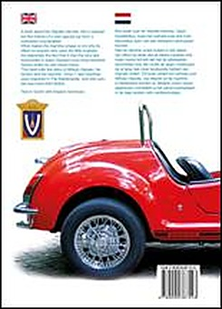
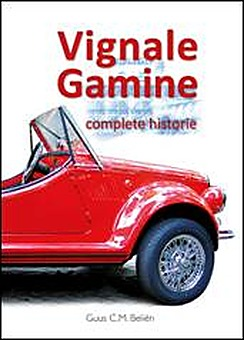

by Guus Beliën · ISBN 9789090387543
Vignale Gamine – Complete Historie
Newest edition, with an English-language appendix — the complete story of Alfredo Vignale, his coachbuilding factory, and more than twenty Gamines still driving in the Low Countries.
The 140-plus page book on the Vignale Gamine first provides an insight into the history of the person Alfredo Vignale and his body and car factory. Next comes the unprecedented history of the Vignale Gamine. However, we still do not know the exact number that Vignale once ticked off when the last Gamine rolled off the assembly line – even after contacting a Vignale family member – but we are getting close. Of course, we can read about how the cars ended up in the Netherlands. We found out that the Brussels importer of Vignale persuaded a Dutchman to set up the Vignale import for the Netherlands.
I got a lot of information through the help of Frans de Feijter, the son of the former Dutch importer of the brand in Zeeuws Vlaanderen. At the same time, it also becomes clearer how and why the Gamine was introduced in some other countries.
Very special is the story of Gamine sales in Germany. Based on a Gamine owned by a Flemish club member of the Fiat Club Belgio, this history could be illustrated.
Thanks to the careful fact-checking by Gamine drivers Theo van Stokkum and Martin Wildeboer, and Archivio Vignale by Alfredo Zanellato, a good picture can be painted which makes the stories behind more than twenty Vignale Gamines driving in the Low Countries more complete.
Summary in English
As in the 1960s with Vignale’s own information brochure, which included a translation into English after the Italian text at the back, this second edition of the Gamine Book includes an English-language appendix to reach an international audience. For this I am especially indebted to my wife Marly, who in daily life teaches that language.
Numerous illustrations in full colour
In addition to a Vignale history, the new edition is also a book of Gamine drivers. All owners of the cars described in the book I am particularly grateful for the many colour photos and especially their special stories. Some of these have also led to appendices in the back of the edition.
One copy of the book was initially printed for every driving Vignale Gamine in the Low Countries. By 2024, more than 23 Gamines are drivable in Belgium and the Netherlands. This second printing is no longer made just for them but for àll enthusiasts.
At the time, only seven new Gamines from Vignale seem to have been recorded in the Dutch RDW register. 7 is considered a lucky number. Any owner of this wonderful open Vignale will agree: luck, this is what it feels like to drive a Vignale Gamine. But the reader of this book is also lucky to see a driving Gamine.

